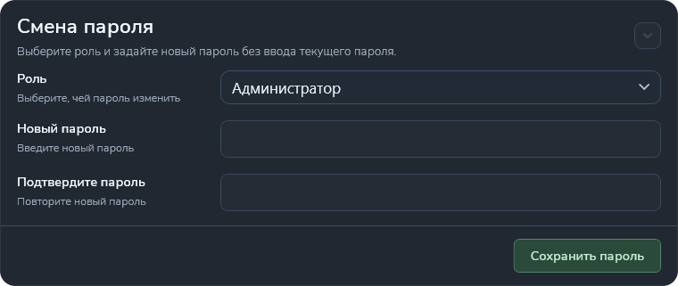

Смена пароля
Раздел «Настройки → Смена пароля» позволяет администратору назначить новый пароль выбранной роли. Текущий пароль вводить не требуется.

Кому доступно изменение
| Текущая роль | Доступность |
|---|---|
| Администратор | Может менять пароли администратора, разработчика ПК и регулировщика. |
| Разработчик ПК | Изменение паролей через этот раздел недоступно. |
| Регулировщик | Изменение паролей через этот раздел недоступно. |
При недостаточных правах приложение показывает сообщение, список доступных ролей не заполняется, а сохранение недоступно. Для смены пароля обратитесь к администратору.
Порядок смены пароля
- Войдите как администратор и откройте «Настройки».
- Раскройте раздел «Смена пароля».
- В поле «Роль» выберите, чей пароль нужно изменить.
- Введите новый пароль в поле «Новый пароль».
- Повторите его в поле «Подтвердите пароль».
- Нажмите «Сохранить пароль» и дождитесь сообщения об успешном изменении.
Правила ввода и сохранения
- Пароль не должен быть пустым или состоять только из пробелов.
- Пароль и подтверждение должны полностью совпадать, включая регистр букв.
- Кнопка сохранения доступна только при выбранной роли, корректно заполненных полях и необходимых правах.
- После выбора другой роли оба поля пароля очищаются.
- После успешного сохранения поля также очищаются, а приложение показывает подтверждение.
При ошибке сохранения приложение выводит причину. Проверьте сообщение и повторите действие. Новый пароль используется при последующей авторизации выбранной роли.
Изменяется пароль роли, выбранной в списке, а не обязательно текущей роли. Перед сохранением проверьте её название. Эта операция не переключает текущую роль пользователя.
Другие разделы описаны в статье «Меню “Настройки”».